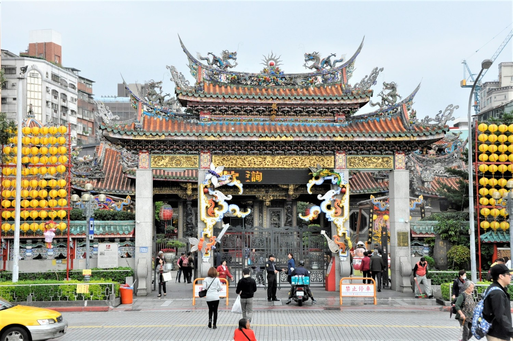
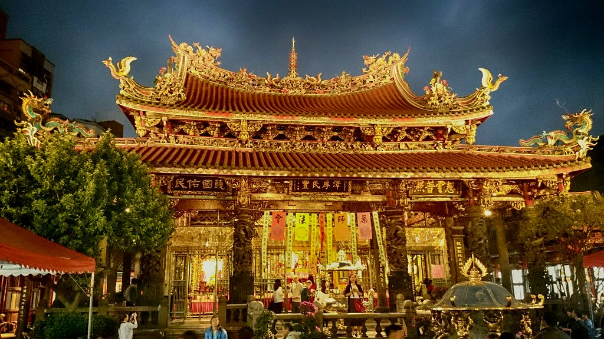
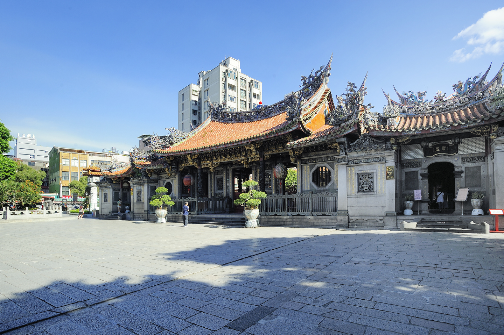

台北-龍山寺




初創之龍山寺，規模雄偉，雕塑精緻，歷經嘉慶二十年（西元1815年）大地震重修，同治六年（西元1867年）暴風雨侵襲再行修築，
至民國八年棟樑遭白蟻蛀蝕，當時住持福智大師率先捐出一生積蓄七千餘元，集資修復，奠定今日龍山寺之規模。民國卅四年於第二次世界大戰期間受空襲摧殘，
中殿全毀，惟觀世音菩薩聖像仍端坐蓮臺，寶相莊嚴；以往遇有空襲，居民皆以觀世音菩薩蓮座下為避難所，然此次空襲前夕，
避難居民因不堪兇蚊肆虐紛紛返家，以致中殿受毀時無人受難，居民相信是觀世音菩薩庇護而奔相走告，此一神蹟更使得觀世音菩薩成為艋舺居民一大精神支柱。
民國七十四年政府公告艋舺龍山寺為國家保護之二級古蹟，與國立故宮博物院、中正紀念堂並列為國際觀光客來臺旅遊的三大名勝。 龍山寺並於板橋文化路興建文化廣場大樓，民國九十四年落成啟用後，辦理多項課程與講座，以善盡弘揚佛法、提倡社教的文化價值。 艋舺龍山寺每年定期舉辦節慶祭典及民俗活動，如農曆正月花燈展覽、四月浴佛節、七月盂蘭盆勝會等，民眾來到艋舺龍山寺除了欣賞臺灣寺廟建築藝術之美， 亦可以感受傳統民俗文化的樂趣。
自行開車：
1.國道1號-臺北交流道下-省道臺2乙線-民族西路-環河快速道路-桂林路-西園路一段-廣州街。
2.國道3號-中和交流道下-縣道106甲線-鄉道北91線-縣道114線-光復橋-西園路二段至一段-廣州街。
大眾運輸：
1.搭高鐵至臺北站下-轉搭臺北捷運至龍山寺站下。
2.搭臺鐵至萬華站下。
民國七十四年政府公告艋舺龍山寺為國家保護之二級古蹟，與國立故宮博物院、中正紀念堂並列為國際觀光客來臺旅遊的三大名勝。 龍山寺並於板橋文化路興建文化廣場大樓，民國九十四年落成啟用後，辦理多項課程與講座，以善盡弘揚佛法、提倡社教的文化價值。 艋舺龍山寺每年定期舉辦節慶祭典及民俗活動，如農曆正月花燈展覽、四月浴佛節、七月盂蘭盆勝會等，民眾來到艋舺龍山寺除了欣賞臺灣寺廟建築藝術之美， 亦可以感受傳統民俗文化的樂趣。
自行開車：
1.國道1號-臺北交流道下-省道臺2乙線-民族西路-環河快速道路-桂林路-西園路一段-廣州街。
2.國道3號-中和交流道下-縣道106甲線-鄉道北91線-縣道114線-光復橋-西園路二段至一段-廣州街。
大眾運輸：
1.搭高鐵至臺北站下-轉搭臺北捷運至龍山寺站下。
2.搭臺鐵至萬華站下。
地點:龍山寺
地址:台北市萬華區廣州街211號
相關連結:http://lungshan.org.tw/tw/index.php
地址:台北市萬華區廣州街211號
相關連結:http://lungshan.org.tw/tw/index.php